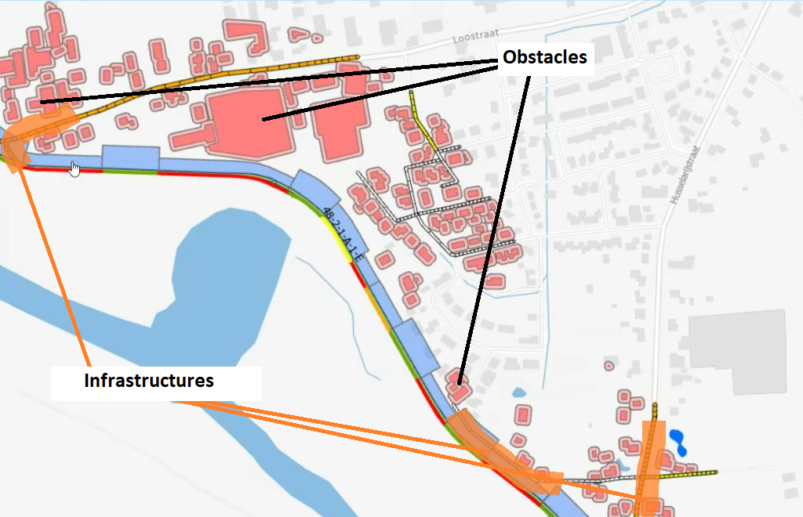
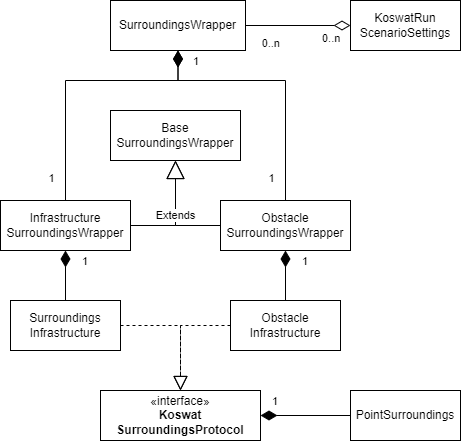

Surroundings¶
In koswat's real domain, a dike is surrounded by all sort of surroundings, these could be nature or human-built structures. During our analyisis we make use of (.shp) maps where a dike's traject is shown together with all the human-built structures in its proximity.
We categorize these structures in the following two types:
- Obstacles, surroundings that cannot be modified in any way.
- Infrastructures, as opposite to the obstacles, surroundings that can be repaired or removed and added again (elsewhere).
|  |
|---|
| Image 1. Surroundings representation |
To define said surroundings we make use of .csv files, each file for a specific type of surrounding that needs to be "enabled" in the koswat_general.json settings file.
In addition, surroundings can be defined for the inside or the outside of a dike. At the current Koswat version (unreleased v0.15.0) we only support surroundings in the inside of a dike ( binnendijks).
Surroundings .csv files¶
The surroundings files follow all the same format both in naming and content.
Their file name has the form of T{dike_traject}_{type_of_surrounding}.csv:
- The {dike_traject} is the dike's traject code name, usually something like 10_1,
- the {type_of_surrounding} is the name of surrounding that will be imported (check further in the corresponding subsections of obstacles and infrastructure).
Their headers are divided in the following columns:
SECTIE, section of the location in the dike's traject,Xcoord, x coordinate of the location,Ycoord, y coordinate of the location,afst_{x}m, distance from the reference point of the location, where 'x' are all the values between5and200with steps of 5, thus 40 columns. The values in these cells define whether there are obstacles or infrastructures at this distance or not and inKoswatare usually built in theSurroundingsPoint.surroundings_matrix, each type of surrounding interprets the weights in a different manner.
Obstacles¶
An obstacle usually represents a building. Because they cannot be removed they become a constraint to the possible reinforcements that can be applied at a given location. For instance, if a dike's reinforcement will become 5 meters wider, but within that distance there are obstacles, said reinforcement will be discarded as a possible option at that location. The distance from the reference point of the dike to the closes point of the obstacle is given.
The values in the columns afst_{x}m are either 1 or 0 and are simply interpreted as having a surrounding or not. Thus ignoring other characteristics of the surrounding and just focusing on its presence.
Obstacle types¶
Currently we identify and support the following surroundings as written in the .csv file names:
bebouwing_binnendijks(buildings),spoorwegen_binnendijks(railways),waters_binnendijks(waters),
As reminder, at the moment we only support 'inside the dike's' surroundings.
Infrastructures¶
Infrastructures are mostly "roads". Contrary to the obstacles these infrastructures do not become a boundary for a reinforcement and they will simply be either displaced or repaired when applying a reinforcement requires their space. When this occurs, it is reflected as additional costs for the given type of reinforcement at that location. In short, these costs are calculated based on:
- The width of the infrastructure (taken from the
Koswat_general.jsonsettings), - The length of the infrastructure at that location (the values in the columns
afst_{x}m), - The required technique (repair, displace, nothing) for the type of infrastructure (also from
koswat_general.jsonsettings) and its related costs (koswat_costs.json).
With the above values we know what's the affected area of an infrastructure when a reinforced profile needs to be applied and therefore can estimate their costs.
The distance from the reference point of the dike to the center point of the infrastructure is given.
Infrastructures types¶
Currently we identify and support the following surroundings as written in the .csv file names:
wegen_binnendijks_klasse2(roads class 2),wegen_binnendijks_klasse7(roads class 7),wegen_binnendijks_klasse24(roads class 24),wegen_binnendijks_klasse47(roads class 47),wegen_binnendijks_klasseonbekend(roads of unknown class),
As reminder, at the moment we only support 'inside the dike's' surroundings.
Surroundings in the code¶
But, how are these surroundings represented in the code? As earlier described, we distinguish surroundings by either obstacles or infrastructures. This is also reflected in the code where we create a general SurroundingsWrapper, which as the name states, wraps the obstacle and infrastructure surroundings in separate properties, each implementing an specialitzation of the BaseSurroundingsWrapper so that:
ObstacleSurroundingsWrapperwill wrap all the supported obstacle types, in separate properties of typeSurroundingsObstacle.InfrastructureSurroundingsWrapperwill wrap all the supported infrastructure types, in separate properties of typeSurroundingsInfrastructure.
A simple diagram illustrating the above can be seen in the image below:
|  |
|---|
| Image 2. Surroundings code-wise |
More detailed information can be found in the corresponding surroundings subproject.